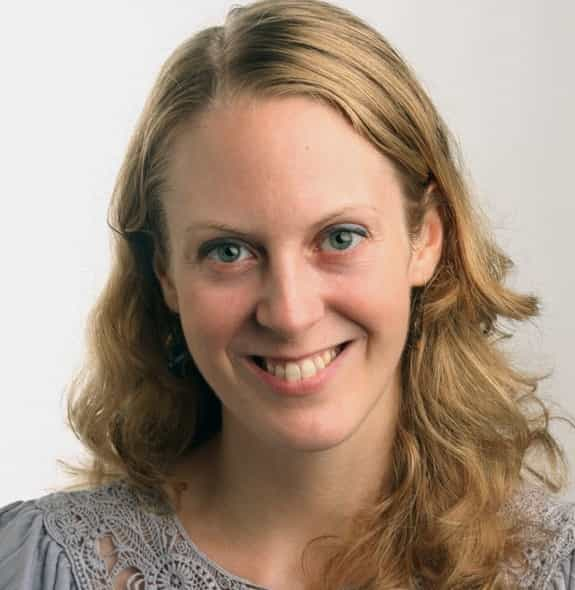
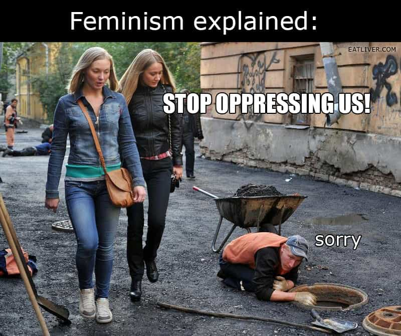
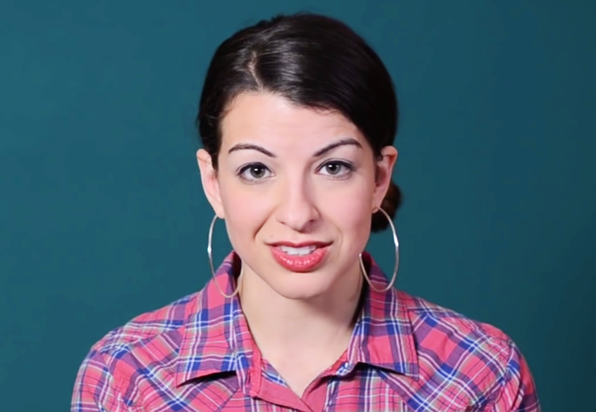

< < < Back
Huffington Post Staff Photo Shows That Their Idea Of “Diversity” Is Hiring Only Non-Black Women – Return Of Kings
The executive editor of The Huffington Post, Liz Heron, has celebrated “diversity” at her workplace by tweeting a photo of 14 non-black women and no men at an editorial meeting. Aside from steadfastly refusing to have at least one African-American or male editor in the room (and creating a seating plan that keeps multiple Asian staff at the far end of the table), Heron sought fawning approval from the Twittersphere for her “inclusive” employment policies.
Strangely enough, Heron was a savage, unambiguously unbalanced critic during the “Black Oscars” controversy, in which SJWs insisted that nominations for acting awards had to follow rigid quotas based on the percentage of the black population (about 10% if the main Anglosphere demographics of the United States and United Kingdom are taken into account). Yet by her and her publication’s own explicit and implicit standards, both she and The Huffington Post are both sexist and racist. Liz Heron liked this “HuffPost Black Voices” video attacking the lack of black nominees (#OscarsSoWhite) and made a number of other very vapid social media “contributions” about the beat-up, including this one.
What we are left with is more proof that the diversity agenda is nothing but a sham to advance women, notably those subscribing to the white-centric Western female style of feminism. Heron and her cronies make a very immoral living from attacking other people, organizations and institutions for allegedly not being “inclusive.” When push comes to shove, though, they refuse to follow the very same strictures they shove down other people’s throats on pain of being called misogynists and racial bigots.
How incredibly stupid (or mentally ill) was Heron in expecting praise for that tweet?

Liz Heron celebrates diversity by not including men or blacks.
Are we going too hard on Liz Heron? Is her idea of what diversity is (i.e. no men and no blacks) instead a sign of serious mental illness that needs to be clinically treated? Or maybe a sign she is so intellectually challenged that she cannot perform simple arithmetic? Or finally, like I have said many times before, SJWs are so compulsively blind that they honestly believe the crap they spout.
These claims are frequently believed to the very marrow of leftists’ bones. Why are there so few females in engineering fields, despite the proliferation of so many “scholarships” and other ridiculous advantages for women? “It must be sexism!” No blacks get nominated for an acting Oscar this year? “Racism!” Only women and no blacks are put on an editorial board for a notoriously leftwing so-called news source? “It’s diversity!”
Heron publicly outing her own bigotry has obviously done society a favor. That said, it is also disturbing that someone of her misshapen caliber is acting as the executive editor for a publication that already possesses a rather stellar reputation for distorting the truth.
The executive editorship has only been in Peron’s hands since November, after all. A lot worse is bound to ensue during her tenure. Before her present Huffington Post role, she was “Head of News Partnership” for Facebook, the same social media platform that was revealed this week to be either advancing or suppressing trending news stories, depending on whether the story suited leftist presuppositions. Notwithstanding her lack of real technical expertise, I am sure Heron was an integral part of previous attempts by Facebook to politically manage and not merely disseminate news.
How bad will the liberal bias against men and blacks get?

This picture also explains the media’s choice of fabricated stories in a nutshell.
It is time to remind yourself that liberal publications like The Huffington Post are the same ones that support labeling all men as would-be rapists and upholding black victimhood. And with pernicious people like Peron farcically still maintaining roles at less leftwing news outlets like the Wall Street Journal, we can see that the leftist domination of the mainstream media is some way off being complete. Things can and almost certainly will get worse. Even if for delusional reasons and not through bravery, SJWs are nowadays very, very open about their bigotry. Couple this with a preexisting and expanding control of most media mediums and we have a recipe for additional social and political disaster.
There is no time better than the present for supporting, socially and financially, the forms of journalism that challenge this bias with facts. First and foremost amongst these publications is Return of Kings, which has weathered attacks that would have triggered outlets like the The Huffington Post into closing down forever. Using Peron’s foot-in-mouth moment is certainly necessary, but it cannot take the place of advocating for and backing up good news sources. Inasmuch as the bar for contemporary “journalism” is likely to be lowered again and again in coming years, there are a number of very credible alternatives. With only a modicum of the budget of printed and online rags like The Huffington Post, we have made inroads they could never imagine with the same resources.
The biggest bigots always call others bigots

Liz Heron and Anita Sarkeesian are kindred souls.
The confluence of self-victimhood and opportunities for career advancement is a lucrative one for countless females in modern society. By appealing to invented notions of diversity and misogyny, cretins like Liz Heron and Anita Sarkeesian do not have to sell a brand based on actual worth. They can justify not producing anything of value, or in Heron’s case distract attention from The Huffington Post‘s massive long-term decline in revenue (it made no profit last year).
Plus, the rules they try to enforce do not apply to them. They can keep going long after apparent “equality” has been achieved and carve out even more special and privileged positions for women, ignoring any pretend obligation they have to balance things in favor of certain races or men.
But wait, almost all of you reading this already knew that. The key is making millions of others realize it as well. So, let’s get to it, all while continuing to offer a set of life-enhancing, socially-enriching alternatives for men in particular to read and follow. As the editorial board of The Huffington Post proves, they don’t give a damn about us.
Read More: Huffington Post Is Leading The Way To Totalitarianism